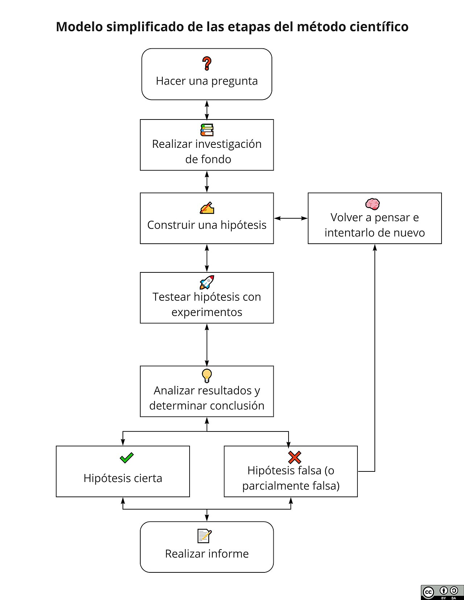

How do you recognize good research ideas that are worth your time and effort? And how do you evaluate whether the hypotheses of others make sense? Here is my take:
— Cecile Janssens (@cecilejanssens) February 24, 2020
1/ pic.twitter.com/LKy8INNCRm
Recordando que el método científico

Hay una parte que es inductiva (se proponen hipotesis) y otra que es deductiva (se comprueba rigurosamente la conclusión a partir de las hipótesis).
Doing science means following the scientific method. The hypotheses we choose to investigate (also in hypothesis-free research) follows from the rigor of our background research and a process that is called inductive reasoning. pic.twitter.com/ojK18UTVK2
— Cecile Janssens (@cecilejanssens) February 24, 2020
La parte deductiva incluye: hacer una pregunta, investigar, hacer una hipotesis. La parte inductiva incluye: construir un experimiento para probar la hipotesis, analisar los datos/resultados y sacar una conclusión
This case can be strong or weak. The case is cogent if we can rely on the premises to be true. A case can be made stronger with more supporting evidence from more background research, and weaker e.g., if new evidence contradicts. pic.twitter.com/dz4ncNTFX5
— Cecile Janssens (@cecilejanssens) February 24, 2020
Entonces, las premisas por lo menos antes de empezar a trabajar deberían de parecer validas (si no se tienen las pruebas) o en otras palabras ser “solidas” (“sound” en Inglés).
Here are examples of evidence that are essential to justify that the diet might work (also the study protocol paper that they cite did not provide this evidence).
— Cecile Janssens (@cecilejanssens) February 24, 2020
With a weak case, an RCT is more likely to show no benefit of the intervention (the diet didn't work). pic.twitter.com/q8iiBKjofx
Tambien si basas tu trabajo en otros que no proveen pruebas, talvez sea indicación de poco trabajo previo o mal trabajo previo.
Entonces, se debe buscar tener un fuerte argumento a favor o por lo menos una corazonada fuerte de que al final del camino existe la razon para ocupar tu tiempo en ese argumento respecto a la pregunta inicial.